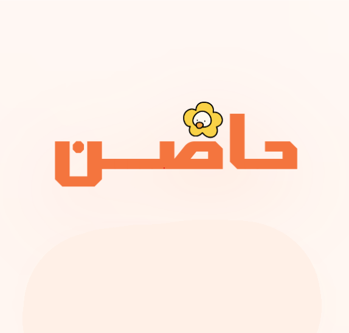
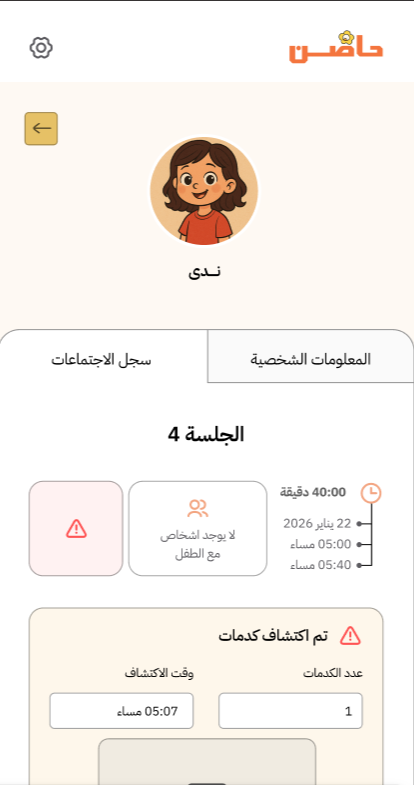
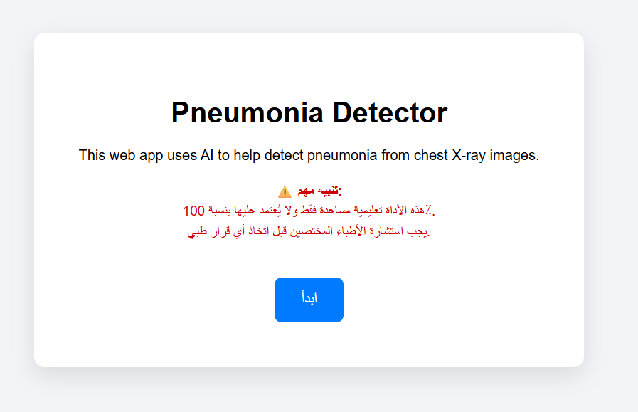
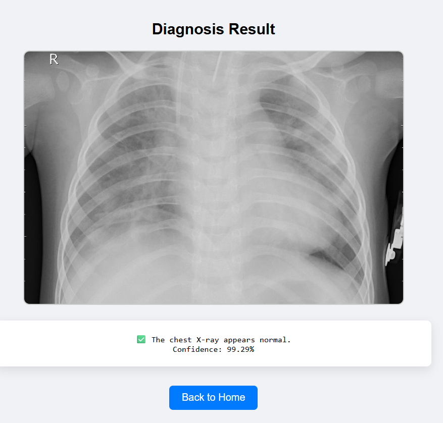
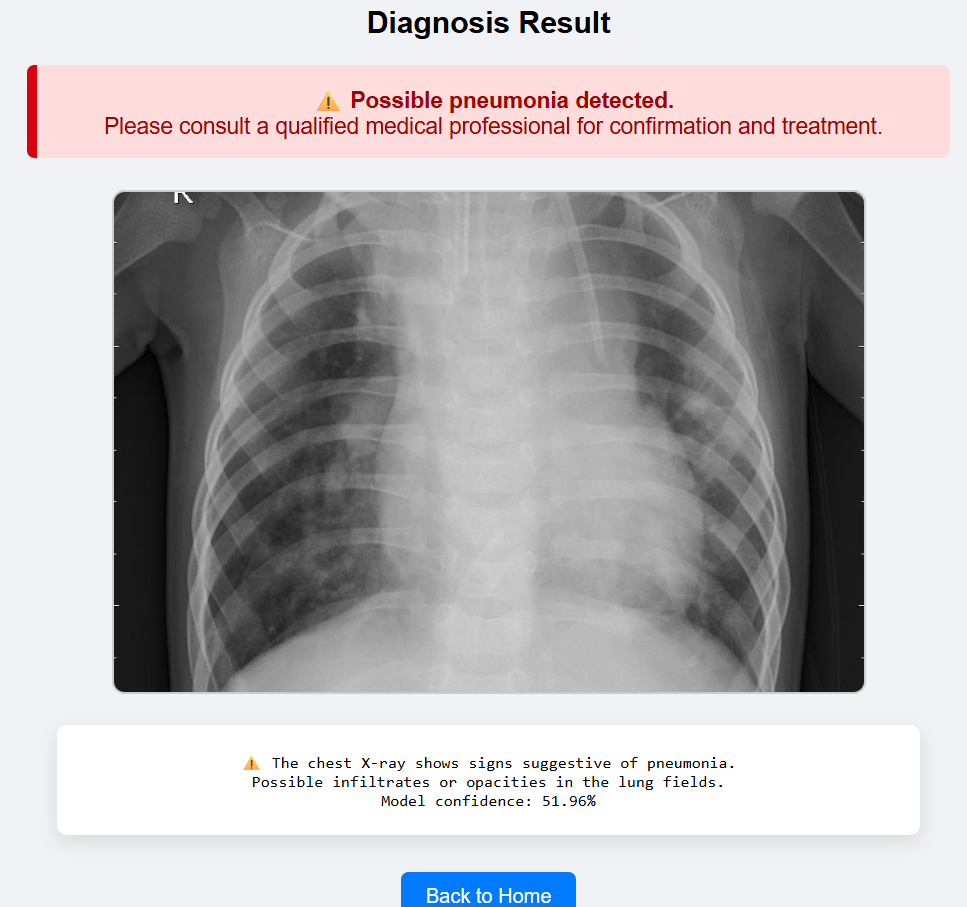
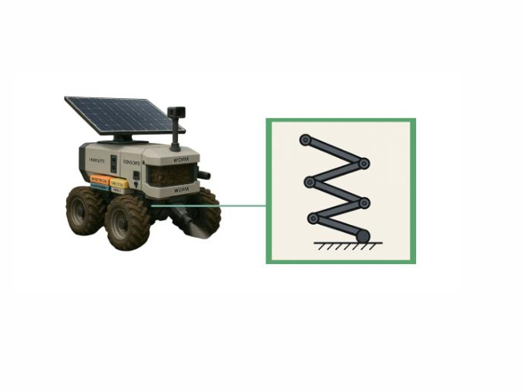
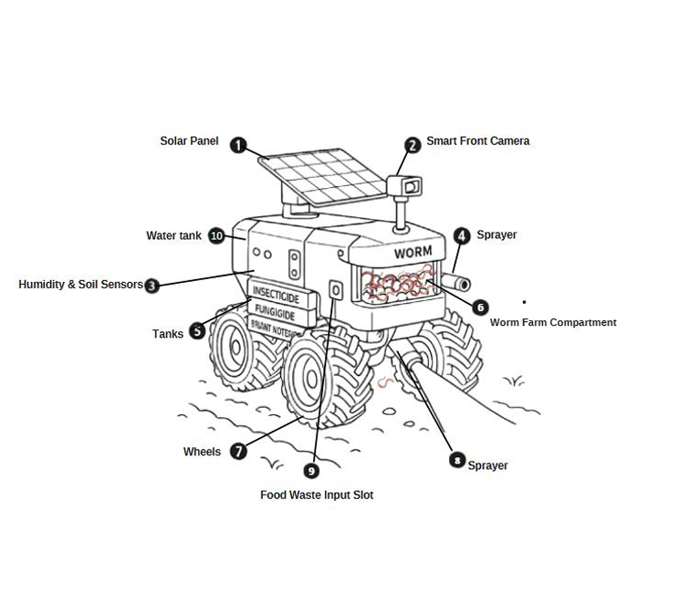
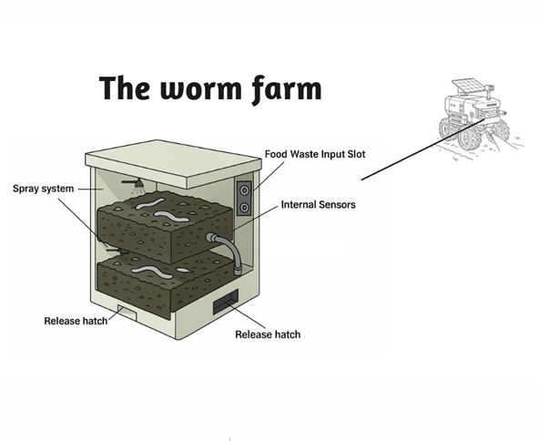

OPEN TO OPPORTUNITIES
MAKKAH, SAUDI ARABIA
HELLO, I'M
Ritaj
Alharbi.
Artificial Intelligence Engineer
I build intelligent solutions through machine learning, computer vision, and AI-powered applications — turning ideas into meaningful experiences.
✳
INTELLIGENCE
IN MOTION
IN MOTION
LEARNING · BUILDING · ITERATING
SCROLL TO EXPLORE
01
A LITTLE ABOUT ME
Curiosity drives
what I create.
I'm an Artificial Intelligence graduate from Umm Al-Qura University with hands-on experience in machine learning, computer vision, and AI-powered applications.
I'm passionate about developing intelligent solutions, exploring emerging technologies, and continuously expanding my technical skills while contributing to innovative projects.
3.73 / 4.00
GPA · SECOND-CLASS HONORS
2026
GRADUATION YEAR
TOP 10
TCS SUSTAINATHON · NABATRON
02
MY TOOLKIT
Skills & technologies.
A growing toolkit for solving real-world problems.
AI & Machine Learning
Data & Web
Tools & Productivity
03
SELECTED WORK
Projects with purpose.
Applying AI to human-centered and practical challenges.


HADEN · AI COMPANION
Add your project images
VIRTUAL COMPANION · AI
AI COMPANION · COMPUTER VISION
Haden
AI Companion for Adopted Kids
An AI-powered companion designed to support children's emotional well-being through an interactive virtual character that talks and interacts with the child, alongside facial emotion analysis and automated report generation.
- Developed and fine-tuned a Vision Transformer (ViT) model for facial emotion detection.
- Created a virtual character that talks and interacts with the child through voice-based conversations.
- Implemented automated report generation using GPT-4, Whisper, and text-to-speech technologies.



PNEUMONIA DETECTION
Add your project images
IMAGE CLASSIFICATION
DEEP LEARNING · HEALTHCARE
Pneumonia Detection System
A deep learning image-classification system that analyzes chest X-ray scans for pneumonia detection.
- Used transfer learning and fine-tuning with the ResNet18 architecture.
- Implemented the model in PyTorch for medical image feature extraction and classification.



NABATRON · SUSTAINABLE FARMING
Add your project images
TCS SUSTAINATHON · KACST
HACKATHON · SUSTAINABILITY
Nabatron
TCS Sustainathon · KACST
Collaborated with a multidisciplinary team to develop an innovative, sustainability-focused desert farming solution.
- Selected among 400+ participating teams and ranked in the Top 10.
04
WHERE I'VE LEARNED
Experience & education.
MAR 2025 — AUG 2025
COOPERATIVE TRAINING
Heraa General Hospital
Digital Health Department · Makkah, Saudi Arabia
Gained hands-on experience in AI applications for medical imaging and healthcare IT, including X-ray image analysis, hospital database systems, remote troubleshooting, and PC hardware setup.
JUNE 2026
BACHELOR'S DEGREE
Umm Al-Qura University
Bachelor of Artificial Intelligence & Computer Science
GPA: 3.73 / 4.00 · Excellent · Second-Class Honors
05
CONTINUOUS LEARNING
Certificates & languages.
01
Python BasicsCoursera · KAUST
↗
02
Supercharge Your Data Analytics with Generative AIIBM SkillsBuild
↗
03
Fundamentals of Artificial IntelligenceSDAIA
↗
04
English Language CourseSaudi High Women's Institute for Training
↗
05
Word Processing Program (Microsoft Word)Tadreeb
↗
06
Data Manipulation with pandasDataCamp
↗
LANGUAGES
Arabic
Native
English
Professional
Communication is part of every good solution.
06
LET'S CONNECT
HAVE A PROJECT OR OPPORTUNITY?